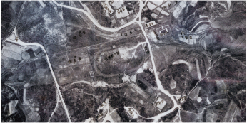

충북대학교 72년
-
웅비
雄飛
1951

청주농과초급대학 개교
교육과 인재 양성에 대한 도민의 열망으로 전쟁의 포화 속에서 개교
- 1951. 09. 27.
- 청주농과초급대학 개교
- 1951. 10.
- 학생자치회 조직
- 1953. 03. 31.
- 청주농과초급대학 제1회 졸업식
- 1953. 04. 01.
- 청주농과대학(4년제) 승격
- 1956. 01. 22.
- 청주농과대학동문회 창립
-
이전
移轉
1956
도립 충북대학
국가 발전에 중추적 역할을 할 인재를 양성하는 중부권 고등교육기관
- 1956. 04. 23.
- 도립 충북대학으로 교명 변경
- 1956. 09. 25.
- 현 개신동 신축 교사로 이전
- 1960. 03. 14.
- 논문집 1호 발간
- 1961. 04.
- 학생회관 개관
-
기반
基盤
1962
국립 충청대학교
학문의 전당으로서 면모를 갖추고 원대한 꿈을 향해 일신
- 1962. 03. 01.
- 국립 충청대학교 농과대학으로 직제 개편
- 1962. 11. 09.
- 제1회 충대의 밤 개최
-
성장
成長
1963

국립 충북대학
도민의 숙원사업인 종합대학을 향한 양적 성장과 대학 운영의 체계화
- 1963. 03. 01.
- 국립 충북대학으로 개편
- 1968. 01. 10.
- 대학원 신설인가
- 1968. 09. 26.
- 제1회 개신축전 개최
- 1973. 12. 29.
- 대학원 박사과정 신설
- 1977. 09. 22.
- 문교부에서 종합대학 승격 발표
-
도약
跳躍
1978

충북대학교
대학 설립 28년 만에 종합대학의 위상을 갖춤
- 1978. 03. 01.
-
국립 충북대학교로 승격
4개 단과대학, 27개 학과, 모집정원 1,190명
- 1978. 03. 09.
- 초대 정범모 총장 취임, 충북대학교 현판식
- 1979. 09. 22.
- 인문대학 설립 인가
- 1985. 11. 23.
- 중앙도서관 개관
-
국제화
國際化
2000

글로벌 대학, 충북대학교
세계적 수준의 대학으로 성장하기 위한 발판 마련
- 2000. 02. 12.
- 국제교육원 개원
- 2001. 01. 01.
- 구 청주과학대학 관리권 본교 이관
- 2005. 03. 01.
- 종합인력개발원 설치
- 2009. 08. 07.
- 입학관리본부 신설
- 2010. 08. 27.
- 기초교육원 설립
- 2013. 06. 17.
- 창업지원단 설치
-
상생
相生
2015
지역 상생의 중심, 충북대학교
광역캠퍼스 클러스터 구축을 통한 지역과의 동반 성장 도모
- 2015. 12. 17.
- 오창캠퍼스 융합기술원 개관
- 2017. 02. 21.
- 오송캠퍼스 약대 이전
- 2021. 10. 01.
- 충북대학교동물병원 세종분원 개원
-
혁신
革新
2023

글로컬대학, 충북대학교
지역과 대학이 함께 미래를 준비하고 성장해 가는 지속적 혁신
- 2023. 04. 17.
- 제22대 총장 취임
- 2023. 06. 01.
- 오창 전파플레이그라운드 착공
- 2023. 05. 11.
-
한국교통대학교와 글로컬대학30
사업 추진을 위한 MOU
- 2023. 07. 01.
-
조직개편 (학생처 진로취업부, 산학협력단 조직
효율화 및 산학협력단장 창업지원단장 겸직, 기획처, 연구처, 산학협력단 업무분장 조정)